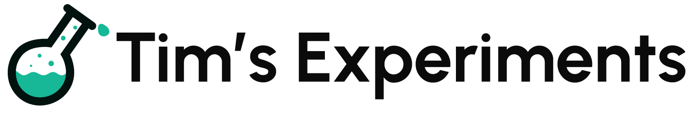
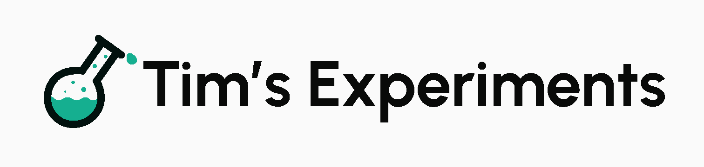
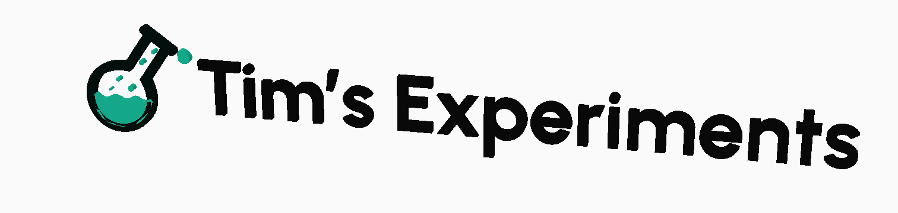
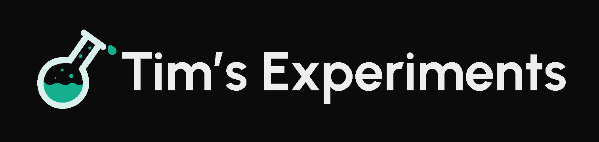
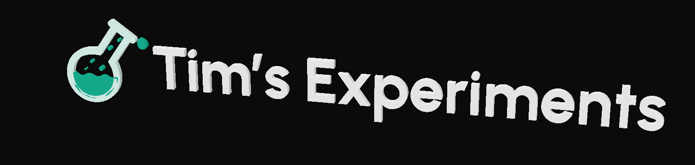
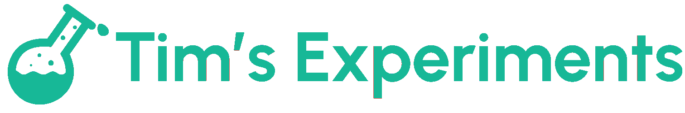

Original vector lettering and flask, extruded with an inward bevel. Each theme uses its own source SVG.







99.657% overlap at 6048 × 1008 pixels. Source colors pass glTF material checks. Each asset has 42,896 triangles, nine meshes, three materials, and no textures. About 3 MB per GLB.
Previews project the actual exported GLBs with a local CPU triangle renderer. Diffuse lighting, no shadows or antialiasing. No app wiring changes.